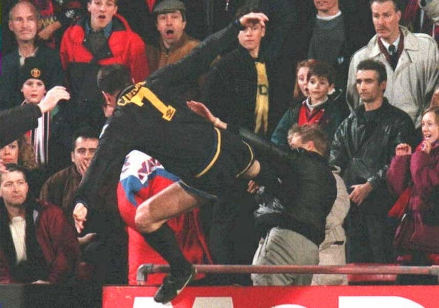

Chương 25

úp C1 mùa 1994-1995 được tổ chức theo thể thức mới: Sau vòng sơ loại sẽ là vòng đấu bảng: Tổng cộng bốn bảng, mỗi bảng bốn đội. Nhà vô địch Anh Manchester United lọt vào bảng A, gặp IFK Gothenburg, Galatasaray, và Barcelona. Barcelona mùa này còn mạnh hơn Barcelona năm 1992. Michael Laudrup đã ra đi, nhưng lực lượng họ lại được bổ sung thêm “vua lùn” Romario, “Maradona xứ Carpath” Gheorghe Hagi, và các nhân tài bản địa như Sergi, Nadal, Guardiola. Thật là một “đội bóng trong mơ”!
Lượt đi vòng đấu bảng diễn ra khá suôn sẻ. United nhẹ nhàng vượt qua Gothenburg, hòa 0-0 trên sân khách với Galatasaray, và hòa 2-2 trên sân nhà với Barcelona. Khó khăn bắt đầu khi đội phải đến làm khách tại Camp Nou. Đã không có Cantona vì án treo giò, Alex Ferguson lại quyết định loại Schmeichel để nhường năm suất nước ngoài cho các cầu thủ tuyến trên. Đó là một sai lầm lớn. Dùng thủ thành dự bị Gary Walsh đối đầu với cặp sát thủ Romario-Stoichkov, chẳng khác gì tự rước thảm họa. Không lạ gì khi Barca giành thắng lợi áp đảo 4-0. Nhưng Alex không trách Walsh, ông nổi điên với Paul Ince, vì Ince bất chấp chỉ đạo của HLV, thay vì phòng ngự, chỉ lo cắm đầu tấn công. Alex mắng Ince là “thằng phá hoại”, hai bên cãi nhau kịch liệt một chặp.
Trận kế tiếp gặp Gothenburg ở Thụy Điển, United chỉ cần một một điểm để lọt vào vòng trong. Khi tỷ số đang là 1-1, họ không tập trung bảo vệ thành quả, mà tiếp tục hùng hổ lao lên, kết quả dính phải hai đòn “hồi mã thương” của đối thủ, chịu thua tức tưởi 1-3. Paul Ince tiếp tục “phá hoại”, bị trọng tài đuổi khỏi sân vì đá láo. Trong trận cuối cùng, Quỷ Đỏ đè bẹp Galatasaray 4-0, song mọi sự đã an bài. Gothenburg và Barcelona dắt tay nhau đi tiếp.
Quy định hạn chế cầu thủ nước ngoài có cái lợi của nó. Nhờ vậy, các cầu thủ trẻ của United có dịp ra sân, chinh chiến trên mặt trận châu Âu. Nicky Butt có mặt ở tất cả các trận vòng bảng Cúp C1. David Beckham và Gary Neville được ra sân trong trận cuối gặp Galatasaray.Tại Cúp LĐ, Alex Ferguson cũng bắt đầu chính sách sử dụng cầu thủ trẻ. Chính sách này ban đầu vấp phải sự chống đối dữ dội. Trong buổi họp hạ nghị viện Đại Anh, một dân biểu chỉ trích đích danh Alex, và đề nghị ra luật mới, buộc các CLB phải luôn sử dụng đội hình mạnh nhất để phục vụ người hâm mộ. Nhưng theo thời gian, các đội mạnh ở ngoại hạng đều theo gương United: Dùng Cúp LĐ, thậm chí là Cúp FA, làm sân chơi cho cầu thủ trẻ. Vậy nên, Meek và Tyrrell (2011) đã viết: “Ferguson luôn đi đầu tạo nên trào lưu. Ferguson nghĩ hôm nay, thiên hạ nghĩ ngày mai”. Dĩ nhiên, đó chỉ là một lời thậm xưng, song cũng có cơ sở.
Tuy thế, cầu thủ trẻ cần có thời gian trưởng thành, nên sau thất bại ở Cúp C1, Alex nghĩ đến việc phải mua thêm một tiền đạo người Anh. Nếu không có tiền đạo nội, sẽ rất khó sắp xếp đội hình thi đấu ở châu Âu, vì những tên tuổi lớn trên hàng công của United (Cantona, Hughes, McClair) đều là người nước ngoài cả. Tiền đạo nội thì lúc đó có hai tên tuổi đang lên là Andy Cole và Stan Collymore. Andy Cole là vua phá lưới giải Anh mùa 1993-1994 với 34 lần lập công cho Newcastle, còn Stan Collymore lúc ấy hãy còn ghi bàn như máy cho Nottinham Forest, chứ chưa bê tha bệ rạc. Sau khi “dạm ngõ” Cole không thành, Alex xoay sang Collymore. Cũng lại không thành, ông trở lại hỏi mua Cole thêm lần nữa. Lần này, Newcastle đồng ý, với điều kiện United phải trả sáu triệu bảng, đồng thời các thêm Keith Gillespie.
Sáu triệu bảng nghĩa là United một lần nữa phải phá kỷ lục chuyển nhượng, nhưng đó không phải vấn đề, vì trong đợt hè, họ chỉ mới tiêu 250 000 mua thủ môn trẻ Nick Culkin. Trường hợp Gillespie mới gây nhức đầu. Ngoài tiềm năng lớn, Gillespie còn là “thằng nhỏ chạy việc” của Alex, rất được ông yêu mến. Mỗi khi Alex đánh cá đua chó hay đua ngựa, ông chuyên sai Gillespie ra nhà cái đặt kèo. Mặt khác, so sánh giữa Gillespie và Cole thì Cole vẫn cần thiết hơn. Vả lại, sang Newcastle có lợi cho Gillespie: Anh sẽ được đá chính, thay vì chỉ dự bị cho Kanchelskis. Cuối cùng, Alex để Gillespie ra đi. Như món quà cuối cùng cho cậu học trò cưng, ông phóng đại mức lương của Gillespie ở United, buộc Newcastle phải theo đó mà trả lương cho anh. Nhờ mánh khóe của thầy, từ chỗ nhận lương còm 250 bảng, Gillespie lãnh mỗi tuần 2000 tại St James’ Park.
Andy Cole vừa đến, Gillespie vừa đi, thì xảy ra sự kiện động trời 25/1/1995. Phút 49 trận Manchester United-Crystal Palace, Cantona nhận thẻ đỏ rời sân. Một tay hooligan Palace canh lúc anh đi ngang, hô lớn “ĐM thằng người Pháp, cút mẹ mày về nước đi!” Cantona lập tức tung người, như một võ sỹ kung fu, đá thẳng vào ngực kẻ miệt thị mình. Mải theo dõi trận đấu, Alex Ferguson không hay biết chuyện gì xảy ra. Mãi đến khi thấy nhốn nháo, ông mới để ý, nhưng chỉ cho là Cantona lại cãi nhau gì đó mà thôi. Cuối trận, lúc cảnh sát gặp Alex, cho biết họ sẽ mở cuộc điều tra, ông tỏ ra ngạc nhiên: Điều tra cái gì? Cái gì mà điều tra? Chỉ là một thẻ đỏ thôi mà.
Về đến nhà, Alex lăn ra ngủ. Bốn giờ sáng trở dậy, bật TV lên xem, ông mới hiểu độ nghiêm trọng của vấn đề. Ngay tối hôm đó, Alex dự buổi họp khẩn với ban lãnh đạo United. Tất cả nhất trí treo giò Cantona bốn tháng, phạt tiền 10 800 bảng[1]. Cho rằng CLB “tự xử” chưa đủ nặng, Liên Đoàn Bóng Đá phạt thêm 10 000 nữa, cùng lúc cấm anh thi đấu đến tận tháng 10, năm 1995. Vì tội hành hung, Cantona còn bị tòa án tuyên hai tuần tù giam, sau giảm xuống 120 giờ lao động công ích.
Bản thân Cantona có những phản ứng gì? Trước giới truyền thông, anh chỉ nói một câu duy nhất:
- Hải âu theo tàu cá, mong đớp được cá mòi!
Nghe như…công án Thiền[2]. Cánh nhà báo mắt tròn mắt dẹt, chẳng hiểu đầu cua tai nheo chi. Các nhà triết học thì gật gù thích thú, nhận Cantona làm đồng nghiệp![3]
Trong thời gian thụ án, Cantona chẳng oán thán gì. Anh tập luyện cầm chừng, lúc rảnh thì đi… đóng phim. Chỉ duy nhất một lần, anh nổi giận muốn bỏ xứ sương mù. Nguyên là để duy trì phong độ cho Cantona, Alex Ferguson hay cho mời các đội bóng nhỏ địa phương tới tập cùng anh tại The Cliff. Khi biết tin này, Liên Đoàn ra lệnh cấm tiệt, bảo rằng như thế tức là Cantona tham gia thi đấu giao hữu. Đang bị treo giò thì giao hữu cũng không được chơi! Cho là Liên Đoàn dồn mình vào đường cùng, Cantona lên máy bay, bay thẳng về Paris, định bụng một đi không trở lại.
Nhưng Cantona bay trước thì Alex bay sau. Bỏ hết công việc, ông thầy tất tả sang Paris. Bị báo chí bám đuôi, ông phải ngụy trang, đến tìm Cantona tại nhà hàng yêu thích nhất của anh. Chủ nhà hàng là một fan hâm mộ bóng đá; ông ta mời hết khách hàng ra về, để hai thầy trò Alex có thể tâm sự trong riêng tư. Alex không thuyết giảng gì nhiều. Ông biết Cantona chỉ như một đứa con giận dỗi, đang cần sự an ủi của mẹ cha. Ông an ủi, động viên học trò một lúc, rồi hai người xoay qua tán gẫu về lịch sử túc cầu, bình luận về những trận cầu bất hủ trong quá khứ. Sau mấy giờ đồng hồ trò chuyện, Cantona cảm thấy ấm lòng, đồng ý quay về Anh.
Mất đi “nhà vua”, Manchester United gặp khó khăn trong cuộc đua giành chức vô địch ngoại hạng. Nếu như mùa trước, đội đứng đầu gần suốt mùa giải, thì mùa này luôn phải chạy theo phía sau Blackburn Rovers. Trước vòng đấu cuối cùng, United kém Blackburn hai điểm, nhưng hơn về hiệu số thắng bại. Blackburn đương nhiên đăng quang nếu thắng Liverpool tại Anfield. United sẽ lên ngôi nếu thắng trên sân West Ham, với điều kiện Blackburn thua hoặc hòa. Có thể thấy Quỷ Đỏ vẫn rộng cửa vô địch, bởi đâu ai dễ gì bắt nạt Liverpool trên sân nhà của họ.
Trận gặp West Ham, Alex Ferguson thừa nhận mình sai lầm khi để Mark Hughes ngồi ghế dự bị, chỉ sử dụng một mình Andy Cole trên hàng công. Phải đến hiệp hai, sau khi đã bị dẫn bàn, ông mới tung Hughes vào sân. Mọi việc đã quá trễ tràng, tất cả những gì United có thể làm được là bàn gỡ hòa của Brian McClair. Tại Anfield, Blackburn tuy thúc thủ trước Liverpool, vẫn mở sâm panh ăn mừng. Sáu ngày sau, Quỷ Đỏ hoàn tất cú đúp hạng nhì bằng thất bại 0-1 trước Everton trong trận chung kết Cúp FA.
Hàng phòng ngự United đã có một mùa bóng tuyệt vời. Ở giải VĐQG, họ chỉ để lọt đúng bốn bàn trên sân nhà. Riêng thủ thành Schmeichel lập kỷ lục giữ trắng lưới trong 18 trận. Vấn đề nằm trên hàng công, nơi hiệu suất ghi bàn giảm hẳnsau án phạt của Cantona. Andy Cole bùng nổ, ghi năm bàn trong chiến thắng hủy diệt 9-0 trước Ipswich[4], nhưng trong các trận còn lại chỉ ghi được thêm bảy bàn. Mark Hughes cũng không khá gì hơn. Cầu thủ ghi nhiều bàn nhất cho United mùa đó lại là một tiền vệ: Andrei Kanchelskis, với 15 lần lập công trên mọi mặt trận.
Nhiều người cho rằng, do thất bại trong mùa 1994-1995, Alex Ferguson nổi giận, rao bán các trụ cột như Paul Ince, Mark Hughes và Andrei Kanchelskis. Điều này chưa thật chính xác. Alex không hề muốn bán Hughes và Kanchelskis. Hughes đã lớn tuổi, phong độ bắt đầu đi xuống. Không muốn phải ngồi dự bị cho Cantona và Cole, anh từ chối ký hợp đồng mới với United. CLB chẳng còn cách nào khác, buộc phải để anh sang Chelsea. Trường hợp Kanchelskis còn phức tạp hơn. Trong bản gia hạn hợp đồng ký năm 1994, không biết làm thế nào, luật sư phía Kanchelskis gài được vào một điều khoản: Nếu trong tương lai, United bán Kanchelskis cho CLB khác, cầu thủ người Nga sẽ nhận một phần ba tiền chuyển nhượng. Ta nên biết: Thông thường trong các vụ chuyển nhượng, cầu thủ được chia 10% đã là nhiều, nói chi đến một phần ba. Vậy nên mới ký hợp đồng chưa đầy một năm, Kanchelskis đã nằng nặc đòi đi. Đại diện của Kanchelskis, Grigory Essaylenko, thậm chí còn đập bàn đe dọa Martin Edwards: “Coi chừng đấy, không để anh ấy ra đi thì ông chẳng ngồi đây được bao lâu nữa đâu.” Khiếp vía trước lời dọa dẫm sặc mùi mafia Nga, Edwards bán Kanchelskis cho Everton.
Cầu thủ duy nhất Alex chủ động bán là Paul Ince. Sau năm năm thành công ở Old Trafford, Ince bắt đầu khệnh khạng, có tư tưởng “công thần”. Anh tự đặt ra biệt danh “ngài thống đốc”, và bắt đàn em phải gọi mình bằng biệt danh ấy. Trên sân bóng, anh làm trái chỉ đạo của HLV: Nhất quyết đòi chơi tiền vệ tấn công, chứ không chịu phòng ngự. Với một cầu thủ như thế, Alex quyết không dung túng. “Tôi không nghiêm thì bọn học trò triệu phú ấy sẽ cho tôi chết”, ông nói, “Bởi vậy tôi phải nghiêm. Ai trái lời tôi sẽ chẳng còn đất sống.”
Ince là gương mặt rất được yêu mến tại Old Trafford, nên khi bán anh cho Inter Milan, Alex vấp phải sự phản đối quyết liệt từ các fan. Người hâm mộ càng hoang mang do thấy ông không mua về cầu thủ mới, dù thu lời đến gần 14 triệu trên thị trường chuyển nhượng (Ince: bảy triệu, Kanchelskis: năm triệu, Hughes một triệu rưỡi). Một số hội CĐV Manchester United lên tiếng chỉ trích Alex, cho rằng ông đã lú lẫn, mất trí. Theo kết quả thăm dò ý kiến của tờ Manchester Evening News, chỉ có 47% độc giả ủng hộ Alex, số còn lại đòi ông phải từ chức.
Ngay BLĐ Manchester United cũng có phần nghi ngờ sự sáng suốt của HLV trưởng. Lúc Alex đề nghị được ký tiếp một bản hợp đồng sáu năm, và đề đạt nguyện vọng được ở lại CLB giữ một vị trí cố vấn sau khi về hưu, các vị giám đốc từ chối thẳng thừng. United chỉ ký hợp đồng với thời hạn tối đa là bốn năm, họ giải thích. Việc ở lại đội sau khi về hưu cũng không thích hợp, vì như thế Alex sẽ trở thành một Sir Matt Busby mới, gây khó khăn cho các HLV kế nhịệm. Năm 1995, xem ra chỉ còn…chính phủ Đại Anh là ưu ái Alex, thăng tước cho ông từ Sỹ Quan (OBE) lên Chỉ Huy Đế Chế (CBE).
Sau lưng là một mùa giải trắng tay, phía trước là một tương lai bất định, nhưng Alex Ferguson tin mình đã xử sự đúng. Ông không mua ai để thay thế những trụ cột ra đi, vì thấy điều đó không cần thiết. Lứa cầu thủ trẻ 1992 nay đã trưởng thành, sẵn sàng bước vào sân chơi lớn. Thay thế Paul Ince đã có Nicky Butt, còn Paul Scholes có thể dâng cao, lấp vào chỗ trống do Mark Hughes để lại. Chỉ riêng vị trí tiền vệ phải của Kanchelskis, Alex có đôi chút lo lắng. Ông định mua Darren Anderton của Tottenham, rồi tính “dụ dỗ” Gillespie trở lại Old Trafford. Khi cả hai phương án đều thất bại, Alex mới quyết định tin dùng cầu thủ “cây nhà lá vườn” David Beckham.
Chắc Alex cũng không ngờ, cầu thủ mà ông ít tin tưởng nhất ấy sau này lại trở thành ngôi sao sáng nhất của thế hệ vàng.

Cú đá kung fu của Eric Cantona (ảnh: Whoateallthepies.tv)
[1] Ngoài mặt, Alex Ferguson ủng hộ án phạt, nhưng trong buổi họp kín với BLĐ, ông lại phán một câu: “Nếu là tôi, tôi cũng làm như Eric”. “Ấy chết, chớ dại mà nói thế”, các vị giám đốc cuống quít, “bọn nhà báo nghe được là chúng ta đi đời.”
[2] Công án: Một câu hỏi hay câu nói mang ý nghĩa vượt trên ý thức thông thường, được các thiền sư sử dụng nhằm đánh thức sự giác ngộ nơi người nghe.
[3] Nhiều năm sau, Cantona mới nói thêm một câu về sự kiện ngày 25 tháng một: “Khoảnh khắc đẹp của đời tôi ư? Nhiều lắm, nhưng khoái nhất là lúc đá tên hooligan”.
[4] Trong sự nghiệp cầm quân, Alex Ferguson có hai trận giành chiến thắng 9-0. Lần đầu là trận Aberdeen-Raith trong khuôn khổ Cúp LĐ Scotland, lần thứ hai là trận Manchester United-Ipswich này.